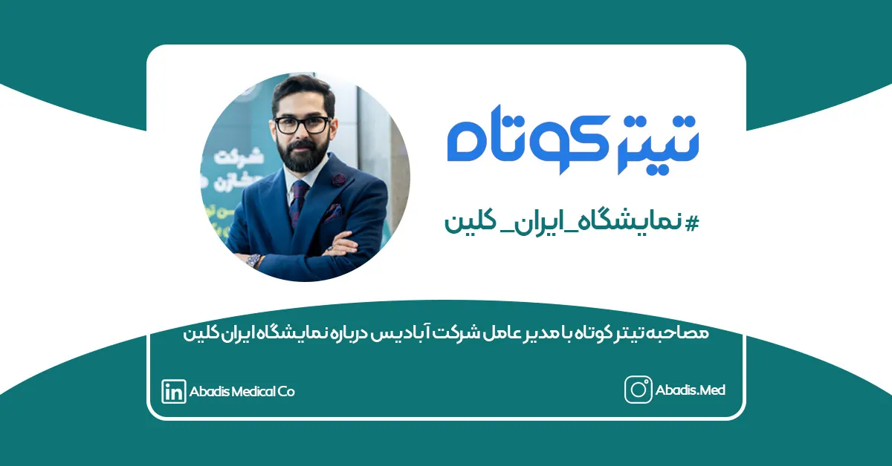
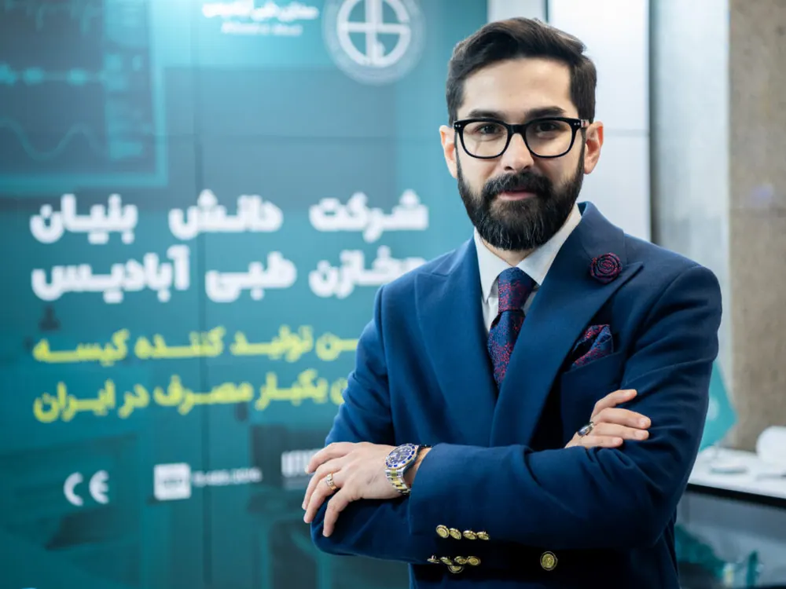

در روز دوشنبه ۱۲ آذر ماه ۱۴۰۳، تیتر کوتاه با مدیرعامل شرکت دانش بنیان مخازن طبی آبادیس جناب آقای مهندس علیرضا حسنعلی اولین مصاحبه را در خصوص زمینه فعالیت مجموعه آبادیس درحوزه کنترل و پیشگیری عفونت و همچنین حضور آبادیس نمایشگاه ایران کلین انجام دادند. در ادامه متن کامل این گفت و گو را مطالعه فرمایید.

در گفتوگوی تیترکوتاه با مدیرعامل شرکت مخازن طبی آبادیس مطرح شد:
نمایشگاه ایران کلین از سیستم پیشرفته هوش تجاری استفاده کند
علیرضا حسنعلی گفت: از تصمیم گیران سلامت کشور در این حوزه انتظار داریم تا در کنگره های تخصصی حوزه سلامت شهری شرکت کنند و از مقالات و دانش های بروز که در این کنگره ها ارائه میشود نهایت استفاده را ببرند و در راستای توسعه و تغییرات اساسی در این صنعت از آن ها بهره مند شوند.
شرکت دانش بنیان مخازن طبی آبادیس با نگاه نو در صنعت تجهیزات پزشکی آمده است تا گامی اثر گذار در کنترل عفونت های بیمارستانی بردارد. ماموریت شرکت دانش بنیان مخازن طبی آبادیس ارائه راهکارها و محصولات تخصصی در این حوزه با نگاهی متمرکز بر روی مدیریت هوشمند زباله های بیمارستانی و جلوگیری از انتشار عفونت های احتمالی پس از عمل برای بیماران است و چشم انداز آبادیس کنترل و حذف عفونت های مرتبط با جمع آوری ضایعات حین و پس از عمل و همچنین تحقیق و توسعه برای تولید محصولات مرتبط با کنترل عفونت در مراکز درمانی در راستای توسعه پایدار است.
شرکت دانش بنیان مخازن طبی آبادیس در ایران به عنوان بزرگترین تولیدکننده کیسه ساکشن یک بار مصرف بیش از ۴۷۵ مرکز درمانی را در ۲۸ استان کشور تجهیز کرده و هم اکنون با ایجاد زیر ساخت مناسب نرم افزاری و سخت افزاری و با بهره گیری از نیروهای کارآمد در واحد تولیدی و شبکه توزیع و فروش خود، آماده صادرات به کشورهای خاورمیانه، حوزه قفقاز، شمال آفریقا و امریکای مرکزی است.
به همین منظور و با توجه به برگزاری نخستین نمایشگاه تخصصی «ایران کلین» گفت و گویی داشتیم با مدیرعامل شرکت مخازن طبی آبادیس که در ادامه مشروح آن را میخوانید:
علیرضا حسنعلی – مدیرعامل شرکت مخازن طبی آبادیس در گفتوگو با تیترکوتاه گفت: شرکت ما دانش بنیان است و از سال 1396 شروع به فعالیت کرده است. شرکت مخازن طبی آبادیس اولین و بزرگترین تولیدکنندگان کیسه ساکشن یکبار مصرف است و تا قبل از ما هیچ مجموعه ای اقدام به تولید این محصول نکرده بود و شرکت ما برای اولین بار فرهنگ استفاده از این محصول را وارد حوزه تجهیزات بیمارستانی کرد.
وی افزود: ما از سال 1399 دانش بنیان شدیم و تمامی اجزای محصولات را خودمان در کشور تولید میکنیم؛ همچنین هدف ما از زمان تاسیس شرکت، در راستای مفهوم ” توسعه پایدار” است.
دغدغه اصلی ما کنترل عفونت در مراکز درمانی است
علیرضا حسنعلی درباره ارزیابی جایگاه شرکت های فعال حوزه نظافت صنعتی و خدمات شهری در داخل و خارج از کشور توضیح داد: لازم به ذکر است در این زمینه تخصص کافی برای اظهار نظر نداریم و در این حوزه اغلب با مراکز درمانی همکاری میکنیم و بطور کلی دغدغه ما کنترل عفونت در مراکز درمانی است.
وزارت بهداشت و شهرداری به حوزه سلامت شهری و کنترل عفونت مراکز درمانی ورود کنند
وی درباره رعایت سلامت و کنترل عفونت در حوزه شهری و اجتماعی خاطرنشان کرد: طبق آمارهای جهانی، بیشترین هزینه های درمان ما مربوط به اتفاقات بعد از جراحی هاست، به این صورت که عدم رعایت بهداشت و بروز عفونتهای بیمارستانی موجب افزایش هزینه های نگهداری بیمار و رعایت سلامت افراد در سطح جامعه شده است. نکته بسیار مهمی که در حوزه سلامت شهری و کنترل عفونت در سطح جامعه وجود دارد این است که نهاد هایی مانند وزارت بهداشت و شهرداری باید قدم بگذارند و با روش های مدرن و پیشرفته اقدامات مهمی در حوزه پسماند و پساب انجام دهند.
مراکز درمانی و تصمیم گیران حوزه سلامت از دانش های بروز بهره گیرند
این فعال صنعتی درباره تاثیر برگزاری نمایشگاه ایران کلین در توسعه صنعت سلامت کشور گفت: از برگزار کنندگان نمایشگاهی در این حوزه انتظار داریم در کنگره های تخصصی حوزه سلامت شهری شرکت کنند و از مقالات و دانش های بروز که در این کنگره ها ارائه میشود نهایت استفاده را ببرند و در راستای توسعه و تغییرات اساسی در این صنعت از آن ها بهره ببرند.
نمایشگاه ایران کلین از سیستم پیشرفته هوش تجاری استفاده کند
مدیرعامل شرکت مخازن طبی آبادیس افزود: شرکت ما اولین شرکت مجهز به سیستم هوش تجاری (BI) در حوزه کنترل عفونت و تجهیزات پزشکی است؛ که براساس آن کلیه تصمیم هایی که در شرکت میگیریم توسط این سیستم و مبتنی بر داده ها می باشد و گزارش دقیقی مبنی بر فرصت ها و تهدیداتی که در مقابل ما وجود دارد به ما گزارش خواهد شد. به عنوان مثال براساس گزارش ها و داده های این سیستم ما درمییابیم که در یک رویداد تجاری مانند ایران کلین چقدر به فروش ما اضافه خواهد شد یا به چه اندازه میتوانیم بازار هدف پیدا کنیم. پیشنهاد میکنیم در حوزه کشوری و یا برگزاری نمایشگاه ایران کلین از این تکنولوژی ها استفاده شود و فرصت های توسعه سیستم سلامت کشور مورد ارزیابی قرار گیرد. و همچنین شاخص هایی تعیین شود که مقالات کنگره تا سال بعد در کدام بخش های سلامت کشور مورد استفاده قرار گرفته است.
چالش های صنعت سلامت در کنگره های تخصصی ارزیابی شود
مدیرعامل شرکت مخازن طبی آبادیس درباره روش حمایت از تولیدکنندگان داخلی و ارتقای سطح کیفیت محصولات ایرانی گفت: ما به عنوان بخش خصوصی روی چند شرکت دانش بنیان در حوزه کنترل عفونت و سلامت شهری سرمایه گذاری کردیم تا سهمی از حمایت تولید کنندگان داخلی داشته باشیم. از مسئولان نیز انتظار داریم از محصولات تولید داخل حمایت بیشتری کنند. یکی از مهمترین اقدامات در راستای حمایت از تولیدکنندگان داخلی، پیگیری و ارزیابی چالش های صنعت سلامت در کنگره های تخصصی این حوزه است که باید بطور جدی مورد توجه قرار گیرد.
بزرگترین چالش شرکت های تجهیزات پزشکی در کشور بحث مطالبات از مراکز درمانی است و اگر درمورد این موضوع راهکار و تصمیم گیری مهم اخذ نشود شاهد مرگ تدریجی تولید در صنعت سلامت کشور هستیم.
برای مطالعه این گزارش در رسانه تیتر کوتاه کلیک کنید.